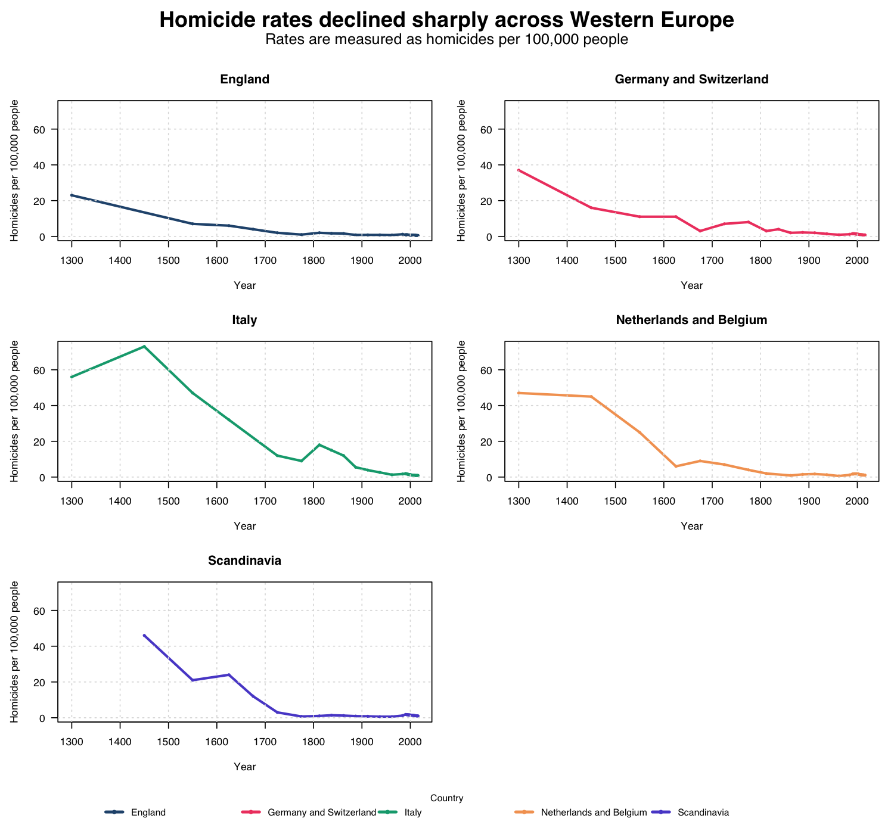

The homicide dataset is fairly clean. The fourth column has been renamed to homicides_per_100k, which records homicides per 100,000 people. A rate is more useful than a raw number here because it adjusts for population size.
Western_Europe <- read_csv("data/homicide-rates-across-western-europe.csv")
names(Western_Europe)[4] <- "homicides_per_100k"The final visualization uses facets so each country or region can be read separately while keeping a common scale.

The overall pattern is strongly downward. In the medieval and early modern periods, homicide rates were much higher, especially in Italy, Scandinavia, and Germany/Switzerland. By the twentieth and twenty-first centuries, the rates in all five regions are much lower and closer together.
The Danish monarchy data were loaded from data/Kongeraekken2.csv. Reign duration was calculated from the start and end years, and the middle year of each reign was used for plotting over time.
kings_duration <- kings %>%
mutate(duration = Regering_slut - Regerings_start,
midyear = Regering_slut - ((Regering_slut - Regerings_start) / 2))The reign-duration trend is more uneven than the homicide trend. It suggests some later political stability, but the homicide data show a clearer and stronger decline in lethal violence.
On the basis of these visualisations, Europe does appear to have become more "civilized" if we define civilization narrowly as a decline in lethal interpersonal violence. The homicide data show a large long-term fall across England, Italy, Germany/Switzerland, the Netherlands, and Scandinavia. In the medieval and early modern periods, homicide rates were often many times higher than they are today. By the twentieth and twenty-first centuries, the regional lines converge at much lower levels, usually around one homicide per 100,000 people or less. That pattern suggests that everyday life became less likely to end in lethal violence.
However, the answer depends on what "civilized" means. Homicide rates measure one important form of violence, but they do not measure all harm, injustice, war, colonial violence, domestic abuse, or state power. The Danish reign-duration plot also reminds us that political stability is uneven and cannot be reduced to one simple line of progress. So my answer is: yes, modern Western Europe looks more civilized in the specific sense that homicide became far less common, but the visualisations do not prove that society became morally superior in every respect. They show a major decline in recorded lethal violence, not the end of violence or human cruelty.
https://github.com/YOUR-USERNAME/HomicideHistory/blob/main/EuropeanHomicide_exercise.Rmdhttps://github.com/YOUR-USERNAME/HomicideHistory/blob/main/EuropeanHomicide_exercise.html